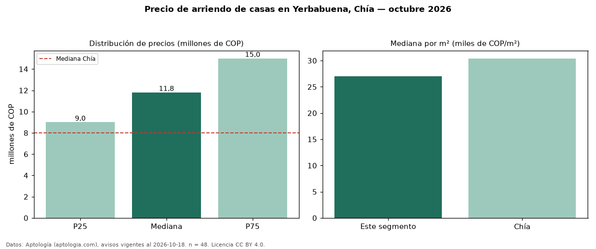

Precio de arriendo de casas en Yerbabuena, Chía — octubre 2026
COP 11,80 millones al mes es el canon mediano de casas en arriendo en Yerbabuena, Chía (n = 48 avisos). Frente a la mediana de Chía para casas (COP 8,00 millones), queda 48 % por encima. Por metro cuadrado, la mediana es COP 27.026/m² al mes (n = 42 avisos con área), 11 % por debajo de Chía (COP 30.408/m²). Con el precio por m² de venta del mismo segmento (COP 6,01 millones/m²), la rentabilidad bruta implícita es 5,4 % anual (aproximación con medianas de ofertas distintas). El área mediana anunciada es 457 m². El segmento con más oferta es el de 3 o más habitaciones (47 avisos, mediana COP 12 millones). La administración mediana declarada es COP 1,10 millones al mes (n = 25), aparte del canon. El estrato más frecuente es 6 (53 % de los avisos con estrato). Datos: Aptología (aptologia.com), CC BY 4.0 — https://www.aptologia.com/arriendo/chia/yerbabuena. Archivos: PDF, CSV con las cifras y gráfica PNG.

| Avisos únicos | 48 |
|---|---|
| Percentil 25 | COP 9.000.000 |
| Mediana | COP 11.800.000 |
| Percentil 75 | COP 15.000.000 |
| Mediana por m² | COP 27.025 |
Fuente: avisos vigentes de portales inmobiliarios recopilados por Aptología, deduplicados (mínimo 30 avisos únicos por celda). Precios pedidos, no cerrados. Fecha: 2026-10-18.